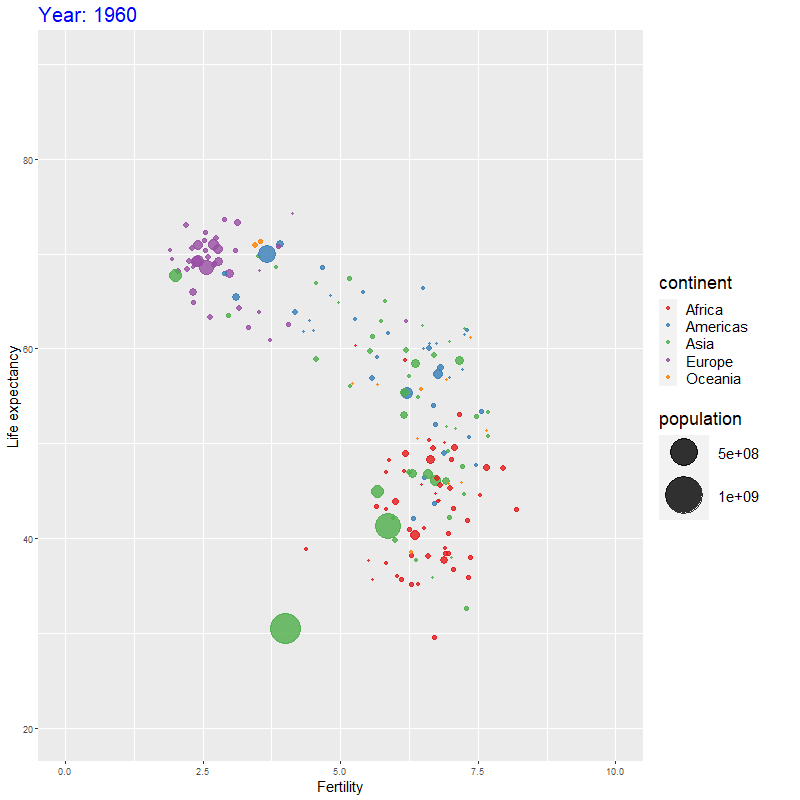

Chapter 5 Applications
Some significant applications are demonstrated in this chapter.
5.1 Example one
Đây là một vài hình vẽ rất đẹp. Test dấu hỏi
library(tidyverse)
library(gganimate)
library(dslabs)
library(gifski)
p<-gapminder%>%
# FIX DU LIEU
filter(year<=2010)%>%
# AESTHETIC MAPPING
ggplot(aes(x=fertility,y=life_expectancy,size = population, colour= continent))+
# TAO DO THI SCATTERPLOT
geom_point(alpha=0.8)+
# THAY DOI TITLE CUA DO THI, TRUC X, TRUC Y
labs(title = 'Year: {as.integer(frame_time)}',
y = "Life expectancy",
x = "Fertility")+
#GIOI HAN LAI GIA TRI TREN X,Y
xlim(0,10)+ylim(20,90)+
# SCALE LAI SIZE (POPULATION)
scale_size(range = c(1, 20)) +
# SCALE LAI MAU SAC THE0 DAI MAU "SET1" CUA BREWER
scale_color_brewer(palette = "Set1")+
# LAM TITLE THAY DOI THEO NAM
transition_time(year)+
#SIZE & FONT CHU
theme(,
plot.title = element_text(size = 20, colour = "blue"),
axis.title.x = element_text(size = 15),
axis.title.y = element_text(size = 15),
legend.text = element_text(size = 15,margin = margin(r = 30, unit = "pt")),
legend.title = element_text(size = 18),
#legend.key.size = element_rect(size = rel(1.5)),
)
# TAO DO THI DANG DONG
animate(p, renderer = gifski_renderer(),
width = 800, #pixel chieu rong
height = 800) # pixel chieu cao
## Example two
<!--chapter:end:04-application.Rmd-->
# Final Words
We have finished a nice book.
<!--chapter:end:05-summary.Rmd-->
# References {-}
<!--chapter:end:06-references.Rmd-->
```r
library(readxl)
library(dplyr)
library(knitr)
library(kableExtra)
library(ggplot2)
library(forcats)
library(ggpubr)
library(grid)
library(gridExtra)
library(forcats)
library(pryr)##
## Attaching package: 'pryr'## The following objects are masked from 'package:purrr':
##
## compose, partial